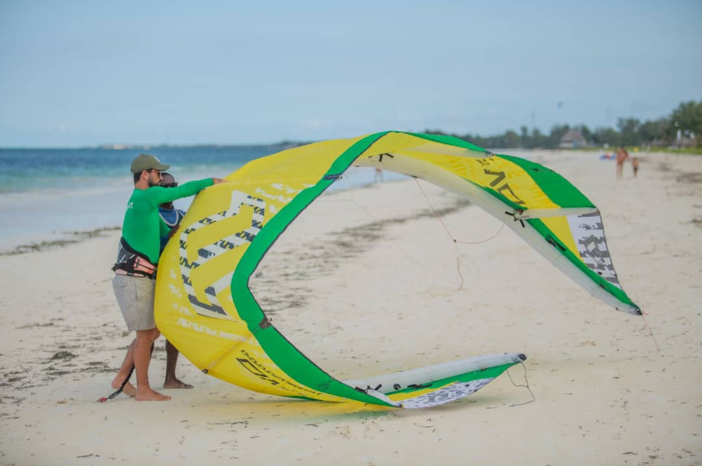
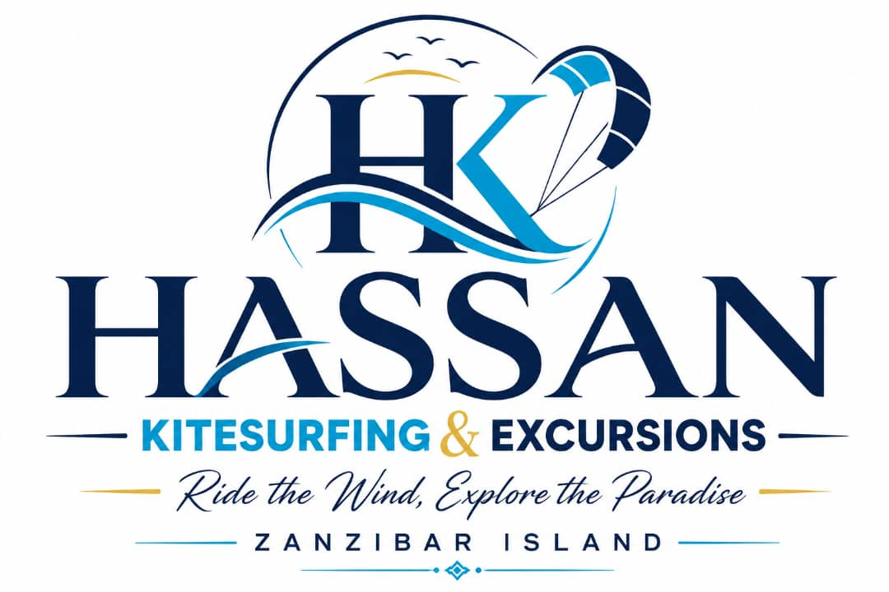
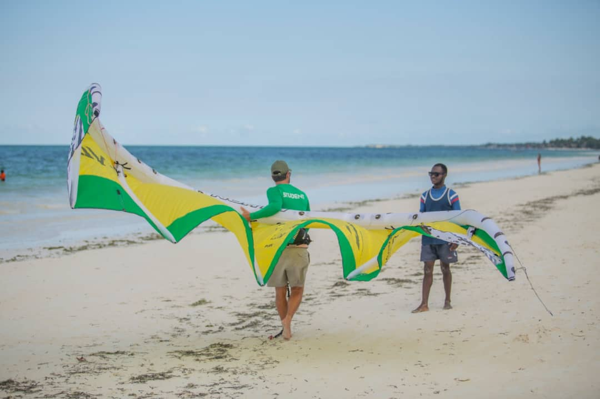
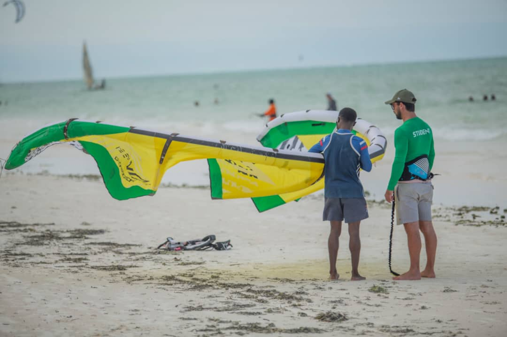
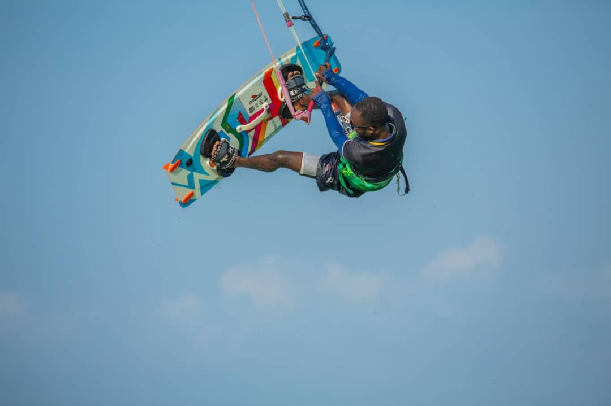

Level 01 · DiscoveryNever touched a kite
Three hours in the shallows: wind window, safety systems and your first body-drags. Max 2 students per instructor.
$70 / hour
3 hrs recommended

Every excursion on the board at Kite Beach is a real departure we run ourselves — from the Mnemba reef at slack tide to a five-day Serengeti crossing on the mainland. One number, one price, no middleman standing between you and the boat.
Started in 2015 with two kites and a patch of sand at Paje. Eleven years later that's still the whole idea — the person who sells you the trip is the person standing on the beach when it leaves.
We're a Zanzibari family business running two sides of one operation: an IKO-certified kite school on Kite Beach, and an excursion desk covering all twenty tours on our sign, plus mainland safaris arranged with our own partner camps in Arusha. No twenty-person boats, no second price at the pier, tides checked against the table — not guessed.
 Wind season, June
Wind season, June
Walking upwind at low tideSandbanks like Nakupenda and Paradise Island only exist for part of the day. We time departures against the printed tide table, so you get the two hours of dry sand you were promised instead of a wet queue of boats.
The number Mohammed sends you on WhatsApp includes the guide, the boat, park and conservation fees. Nobody meets you at the pier with an extra "entrance charge". If a fee changes, we tell you before you travel, not after.
Every trip is led by a Zanzibar-registered guide and capped at twelve people. On snorkelling trips that's one guide in the water for every six swimmers, which is the difference between seeing the reef and following a crowd.
Life jackets for every seat including children's sizes, a marine radio, a first-aid box and a skipper we've worked with for years. We turn trips down in bad weather — a refund is cheaper than a bad day at sea.

Level 01 · DiscoveryThree hours in the shallows: wind window, safety systems and your first body-drags. Max 2 students per instructor.

Level 02 · Water startSix to nine hours across two or three mornings — body-dragging to riding your first fifty metres, with boat support.

Level 03 · Independent & beyondCoaching on transitions, jumps and strapless surf — or skip the lesson and just rent, rescue boat included.
Zanzibar has two reliable trade wind seasons. Book inside these windows and you'll ride nearly every day; book outside them and you'll get beach time instead.
The big one. South-east trades, 18–25 knots, 25+ riding days a month. Book lessons and accommodation early — this is peak season on the east coast.
North-east monsoon, slightly lighter at 15–22 knots and warmer water. Quieter lagoon, better for nervous beginners, still very consistent.
Long rains and light, shifty wind. We keep the school open but honestly recommend you come for the excursions and safaris instead.
The shoulder. Some good days, some flat ones. Best paired with whale watching, which peaks at exactly the same time on the south coast.
Ngorongoro Crater is the only place in Tanzania where all five can be seen in a single day, because the black rhino population lives on the crater floor and can't leave. Everywhere else, leopard and rhino are the two that take patience.
The school, the office and the tour board. Open every day 7am–7pm. Free parking on the road behind Paje by Night.
Get directions Zanzibar Airport (ZNZ) — 50 min awayWe meet arrivals inside the terminal with a name board. Transfers to Paje, Jambiani, Nungwi and Stone Town, day or night.
See the route Stone Town — city tours & ferry pierWhere the Stone Town walk, Prison Island and Nakupenda trips start. 60 minutes from Paje by road.
See the route Mnemba Atoll — north-east reefDeparture from Matemwe or Kiwengwa for the snorkelling and diving trips. Pickup from Paje included.
See the route
Started the school in 2015 with two kites. Ask for him if you're nervous about your first lesson.
We left at six to catch the tide and had the sandbank to ourselves for two hours. The guide knew exactly when the other boats would arrive — and we were long gone by then.
Six hours of lessons across three mornings and I was riding upwind by the last one. Radio helmet made all the difference — being told what to fix while you're doing it wrong is worth every dollar.
Travelling with two kids, I expected chaos on Safari Blue. The group stayed small, the boat left on time and someone was always counting heads. Booked the Serengeti through them afterwards.
Send a WhatsApp message with the tour, the date and how many people. You'll get the price, pickup time and your guide's name back — usually within ten minutes. Most tours need no deposit at all: you pay cash or card on the morning. Multi-day safaris and Mnemba diving need a deposit because park permits and boat slots are bought in advance.
Your guide, the boat or vehicle, all park and conservation fees, snorkelling gear where relevant, and drinking water. Lunch is included where the card says so. Not included: personal drinks and alcohol, tips, and anything you buy at a market. There is no separate "entrance fee" waiting for you at the pier.
Yes, and it's free from the east coast (Paje, Jambiani, Bwejuu, Michamvi) and the north (Nungwi, Kendwa, Matemwe, Kiwengwa). From Stone Town or the south-west there's usually a small vehicle charge, which we'll tell you upfront. Pickup times are 30–60 minutes before departure depending on where you're staying.
We cancel and you pay nothing, or we move you to another day at no cost. We'd rather lose the booking than run a boat in bad water. The decision is normally made the evening before or by 6am, and we message you directly rather than making you wonder.
Children are welcome on almost everything and we carry child-size life jackets. You don't need to be a strong swimmer for the boat trips — snorkelling is done from the surface with a jacket or noodle and a guide beside you. For kitesurfing our minimum age is 12, and the student needs to be comfortable in waist-deep water.
June to September is the strongest all-round window: reliable wind for kiting, calm mornings for the reef, humpback whales from August, and dry weather. December to February is warmer with slightly lighter wind and excellent visibility for diving. March to May is the long rains — cheaper and quieter, but expect afternoon downpours and some cancelled boat days.
That's the most common trip we plan. A typical shape is four or five nights on the coast, a short flight to Arusha or Kilimanjaro, three or four days on the northern circuit, then back to the island or straight home. We handle the internal flights, the park permits and the camps, and you keep one point of contact the whole way.
Reef-safe sunscreen, a hat, sunglasses, a towel and cash in small notes. Wear swimwear under light clothes. For Stone Town and the spice farms, cover shoulders and knees — it's a Muslim island and it's appreciated. A dry bag is useful on boat days; we have a few to lend if you ask the night before.
Tell us the dates you're on the island and what you feel like doing — reef, culture, wind or wildlife. You'll get a straight answer with real prices, usually inside ten minutes, and no pressure to book anything today.
 ★★★★★
4.9 · 320+ reviews
Safari Bookings
★★★★★
4.8 · 150+ safari reviews
★★★★★
4.9 · 320+ reviews
Safari Bookings
★★★★★
4.8 · 150+ safari reviews
★★★★★
4.9 · 320+ reviews
Safari Bookings
★★★★★
4.8 · 150+ safari reviews
★★★★★
4.9 · 320+ reviews
Safari Bookings
★★★★★
4.8 · 150+ safari reviews